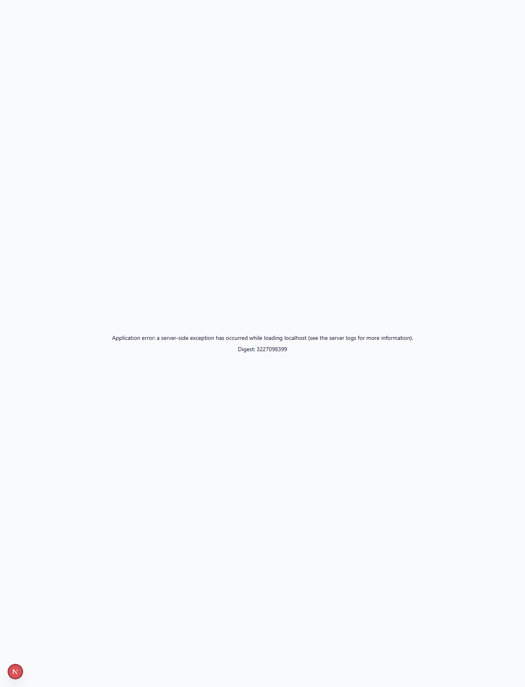
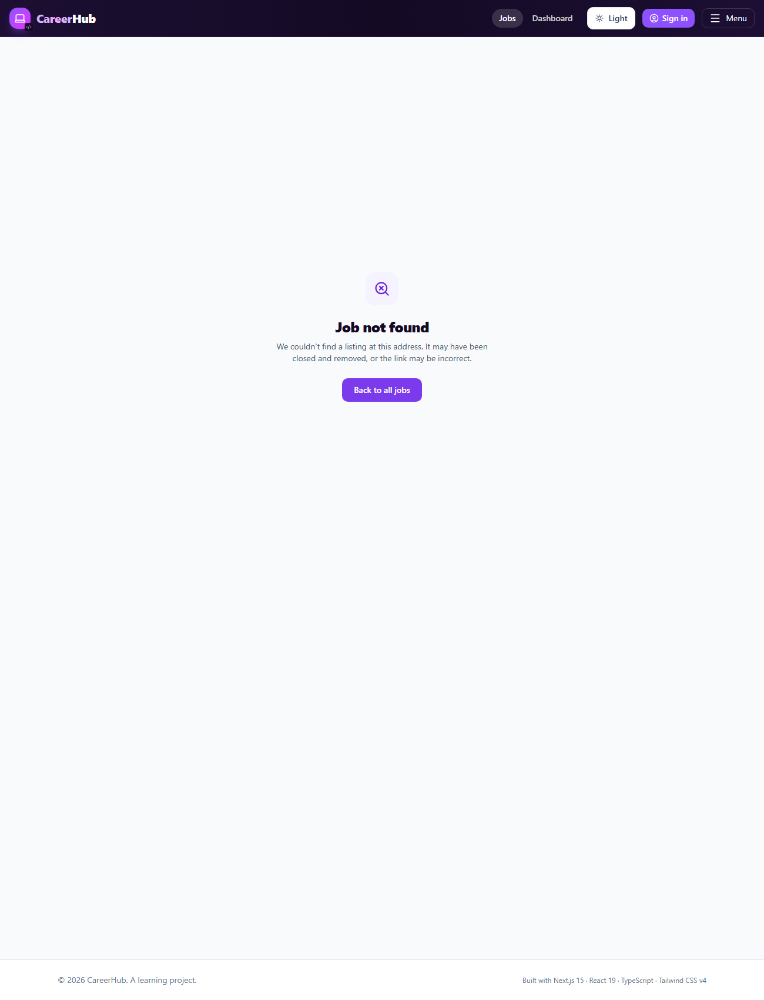
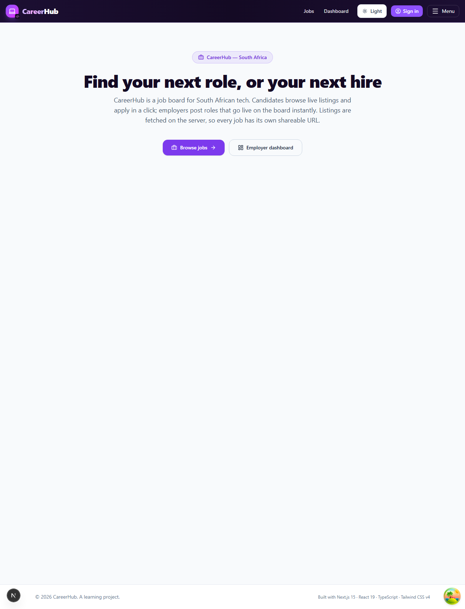
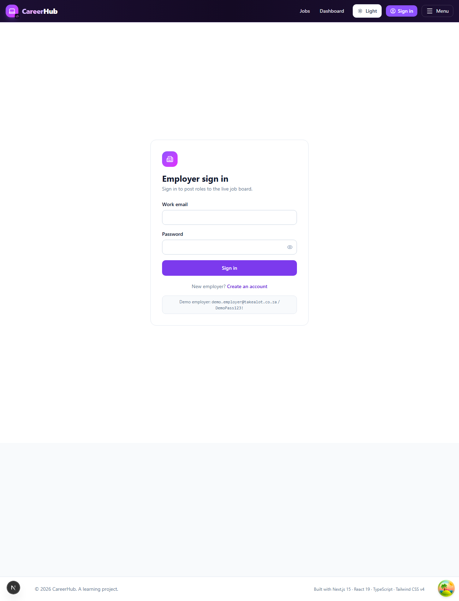

This walkthrough explains every part of the assignment — what it asked for, exactly how I built it, the key code, a picture of the result, and a plain-English summary for beginners. Each part uses three coloured boxes:
CareerHub used to be a single page where everything was drawn in the browser and the web address never changed. This assignment turned it into a proper multi-page app: the job board, each individual job, and the employer dashboard now each live at their own web address (URL). Most pages are now built on the server — the HTML arrives already filled with data, so it is faster, shareable, and ships almost no JavaScript. On top of the assignment, employers can now log in and post a job that is saved in the real database and appears on the board instantly.
Because the fetch happens on the server, the browser never calls the jobs API itself — the job data is already inside the HTML when the page arrives. Job reads and job creation both use this real backend; application submissions still use this app's own built-in mock routes (unchanged from Assignment 1.4).
| URL | What it is | Rendering |
|---|---|---|
| / | Landing page with two buttons | Server · static · no JS bundle |
| /jobs | The job board (grid of cards) | Server · dynamic |
| /jobs/[id] | One job + application form | Server · dynamic |
| /dashboard/listings | Employer table with sidebar | Server · dynamic |
| /recruiter/signin | Employer login / register | Client (real JWT auth) |
Four concept questions. Full answers are in the project README.md; here is the beginner version of each.
cache: "no-store" vs the defaultfetch on the server and reuse it. cache: "no-store" means "never remember this — always ask the backend fresh." We use it so a job posted seconds ago shows up immediately. This is a server cache shared by all visitors — completely different from TanStack Query, whose cache lives in each person's browser and refetches when you refocus the tab."use client" boundary"use client" at the top of a file marks it (and what it imports) as "runs in the browser." A Server Component sends finished HTML; a Client Component sends JavaScript that makes things interactive. On a job page, the job text arrives as HTML you can read instantly, and only the application form ships JavaScript to become clickable.params.id is always a string/jobs/42 means the number 42 or the text "42", so it always gives you the id as text (a string). Our backend uses text GUIDs like ddeb52e4-…, so we pass the id straight through — no conversion needed.src/app/api/jobs/[id]/route.ts
id from the URL, returns 404 in Problem Details shape ({title, detail, status}) when the job doesn't exist, and otherwise returns the full job as JSON.exports a GET function — Next.js then answers any other method (POST/PUT/…) with an automatic 405. A missing id returns the exact Problem Details body with status 404.export async function GET(_req: Request, { params }: { params: Promise<{ id: string }> }) {
const { id } = await params;
const job = findJob(id);
if (!job) {
return NextResponse.json(
{ title: "Job not found", detail: `No job exists with id '${id}'.`, status: 404 },
{ status: 404 },
);
}
return NextResponse.json(job); // 200 with the full job
}
// Only GET is exported → a POST to this route gets an automatic 405.GET …/api/jobs/<real-id> → 200, …/does-not-exist → 404, POST → 405./jobs Listing (Server Component)JobLinkCard.tsx · jobs/(board)/page.tsx · jobs/(board)/loading.tsx · lib/jobs-api.ts
<Link>, no "use client"). A /jobs page that is an async Server Component, fetches all jobs with cache:"no-store", throws on errors, renders a grid of cards (or an empty state). Plus a loading.tsx skeleton matching the grid.<Link> with the job's title, company, location and a status badge — no clicks, no state — so it stays a Server Component. The page fetches the board on the server and maps each job to a card. The skeleton shows pulsing grey cards while the data loads.(board) folder (a "route group"). That keeps the loading skeleton scoped to the list only — explained in the "404 deep-dive" later.// JobLinkCard.tsx — a Server Component (no "use client")
export default function JobLinkCard({ job }: { job: JobSummaryView }) {
return (
<Link href={`/jobs/${job.id}`} className="card">
<EmploymentTypeBadge employmentType={job.employmentType} />
<h2>{job.title}</h2>
<p>{job.company}</p>
<p>{job.location}</p>
</Link>
);
}
// jobs/(board)/page.tsx — async Server Component
export default async function JobsPage() {
const res = await fetch(`${JOBS_API_BASE}/api/jobs?page=1&pageSize=12`, { cache: "no-store" });
if (!res.ok) throw new Error(`Failed to load jobs — ${res.status}`); // don't swallow errors
const { data } = await res.json();
const jobs = data.map(toSummaryView);
return jobs.length === 0 ? <EmptyState/> : <div className="grid">{jobs.map(j => <JobLinkCard job={j}/>)}</div>;
}
/jobs/[id] Detail Pagejobs/[id]/page.tsx · not-found.tsx · error.tsx
async Server Component that fetches one job (cache:"no-store"); on 404 it calls notFound() (no half-page); on other errors it throws. It renders the job details, a "← Back to jobs" link, and the existing ApplicationForm — but only when the job is not Closed. Plus a not-found.tsx page.404 → notFound(), any other failure → throw (caught by error.tsx). It renders the details as HTML, then drops in the ApplicationForm Client Component for open roles (or a "no longer accepting applications" message when Closed). This is the composition moment: a Server Component (data + HTML) hands two props to a Client Component (the interactive form).export default async function JobDetailPage({ params }: { params: Promise<{ id: string }> }) {
const { id } = await params; // id is always a string
const res = await fetch(`${JOBS_API_BASE}/api/jobs/${id}`, { cache: "no-store" });
if (res.status === 404) notFound(); // → renders not-found.tsx (HTTP 404)
if (!res.ok) throw new Error(`Failed to load job ${id}`); // → renders error.tsx
const job = toDetailView(await res.json());
return (
<>
<Link href="/jobs">← Back to jobs</Link>
<h1>{job.title}</h1> {/* …company, location, description… server HTML… */}
{job.status === "Closed"
? <ClosedMessage/>
: <ApplicationForm jobId={job.id} jobTitle={job.title} />} {/* Client Component */}
</>
);
}
/dashboard Layout & Listingsdashboard/layout.tsx · dashboard/listings/page.tsx
{count} listings" subheading and an empty state.totalCount.// dashboard/layout.tsx — Server Component sidebar that persists
export default function DashboardLayout({ children }) {
return (
<div className="flex">
<aside>
<h2>Employer Dashboard</h2>
<Link href="/dashboard/listings">All Listings</Link>
<Link href="/jobs">View as Candidate</Link>
</aside>
<div>{children}</div> {/* only THIS swaps on navigation */}
</div>
);
}| Title | Company | Location | Status | Action |
|---|---|---|---|---|
| SMOKE TEST Engineer Z | Takealot | Cape Town | Active | View |
| Senior Cloud Architect | Discovery | Sandton | Active | View |
| Graduate UX Designer | Takealot | Cape Town | Active | View |
Verified live: sidebar + table both render, subheading shows 833 listings, 50 rows with working View links (rendered here as a mock-up).
page.tsx · NavLinks.tsx · Navbar.tsx
"use client", hooks and queries — showing a heading, a description, and two link-buttons. The home route should ship no JavaScript of its own./jobs and /dashboard/listings. The build confirms it as ○ (Static) with no route-specific JavaScript.// page.tsx — pure Server Component (no "use client", no hooks)
export default function Home() {
return (
<section>
<h1>Find your next role, or your next hire</h1>
<p>CareerHub is a job board for South African tech…</p>
<Link href="/jobs">Browse jobs</Link>
<Link href="/dashboard/listings">Employer dashboard</Link>
</section>
);
}
○ (Static) with no JS bundle of its own.NavLinks.tsx is a Client Component that uses the usePathname() hook to know the current URL and adds a highlight class to the matching link. The header and layout stay Server Components — only this tiny piece runs in the browser.error.tsx for the detail routejobs/[id]/error.tsx is a Client Component (Next requires it) that receives the error and a reset() function. If the job fetch fails for a reason other than 404, it shows the message and a "Try again" button that re-runs the page.employer-api.ts · EmployerAuthContext.tsx · recruiter/signin · recruiter
POST /api/jobs that stamps new jobs Active, and the board sorts newest-first — so a new job lands at the top of /jobs with no backend change needed. I added real authentication: the sign-in page logs in (or registers) against the backend's /api/v1/auth and stores the returned JWT. Posting a job sends that token as a Bearer credential.// employer-api.ts — create a job against the REAL backend, with the bearer token
export async function createJobListing(token: string, body: NewJobListing) {
const res = await fetch(`${API_BASE}/api/jobs`, {
method: "POST",
headers: { "Content-Type": "application/json", Authorization: `Bearer ${token}` },
body: JSON.stringify(body),
});
if (!res.ok) throw new Error(await readError(res));
return res.json(); // { id } of the new, live job
}
demo.employer@takealot.co.za / DemoPass123!.The problem I hit: the not-found page showed correctly, but the browser reported HTTP 200. That's wrong — a missing page must report 404 so browsers, search engines and tools know it doesn't exist.
Why it happened: a loading.tsx file creates a "loading boundary" that wraps its folder and everything inside it. With loading.tsx directly in app/jobs/, it also wrapped app/jobs/[id]. That boundary starts sending the page (status 200) before the detail page can call notFound() — so the status was frozen at 200.
The fix: I moved the listing into a (board) route group, so the loading skeleton only wraps the list, not the detail page. A "route group" is a folder in brackets that organises files without changing the URL — app/jobs/(board)/page.tsx still serves /jobs.
| Structure | /jobs loads? | Bad id status |
|---|---|---|
app/jobs/loading.tsx (wraps everything) | ✓ | 200 ✗ |
app/jobs/(board)/loading.tsx (list only) | ✓ | 404 ✓ |
Every route was tested against the running app. Results:
| Check | Result |
|---|---|
/ server landing page, two buttons | ✓ 200 · static · no route JS |
/jobs renders the board from server data | ✓ 200 · 24 cards |
/jobs — no browser fetch to the jobs API | ✓ data is in the HTML |
/jobs — skeleton shows before content | ✓ loading.tsx (in (board)) |
/jobs/[id] shows the correct job + form | ✓ 200 · 2.5s |
/jobs/<fake> shows not-found | ✓ Job Not Found |
/jobs/<fake> HTTP status is 404 | ✓ 404 (production) |
/dashboard/listings sidebar + table + count | ✓ 200 · 833 listings · 50 rows |
| Sidebar persists across navigation | ✓ layout not re-mounted |
| Employer login → post job → appears on board | ✓ verified live (201 → top of /jobs) |
npm run build — TypeScript + ESLint | ✓ zero errors · 18/18 pages |
✓ Compiled successfully
Linting and checking validity of types ...
✓ Generating static pages (18/18)
Route (app) Size First Load JS
┌ ○ / 821 B 107 kB ← landing: static, no route JS
├ ƒ /jobs 821 B 107 kB ← dynamic (server-rendered)
├ ƒ /jobs/[id] 32.7 kB 153 kB ← dynamic (+ ApplicationForm)
├ ƒ /dashboard/listings 164 B 106 kB ← dynamic
└ ○ /recruiter/signin 4.08 kB 107 kB
○ (Static) ƒ (Dynamic, server-rendered on demand)docker ps shows careerhub24-api (:8080) and careerhub24-pg.Note: in development each route compiles on its first visit (it can take 20–60s the first time; afterwards it's instant). The production build renders every route in well under a second.